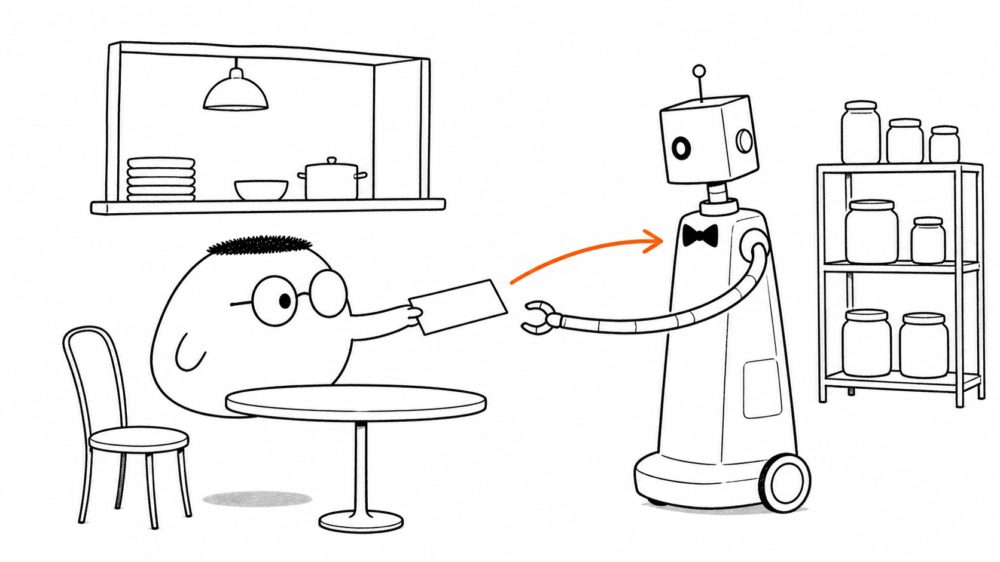
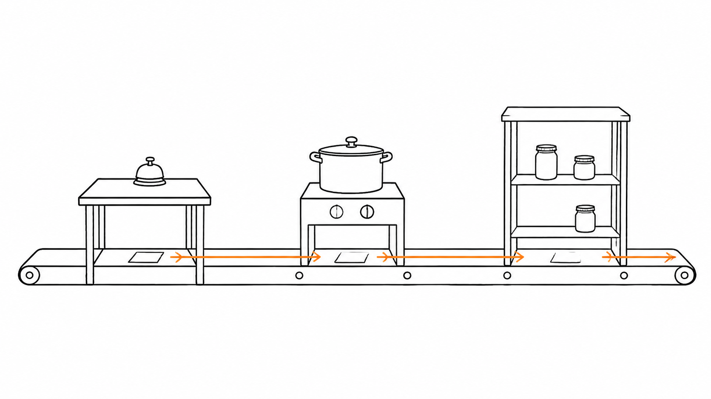
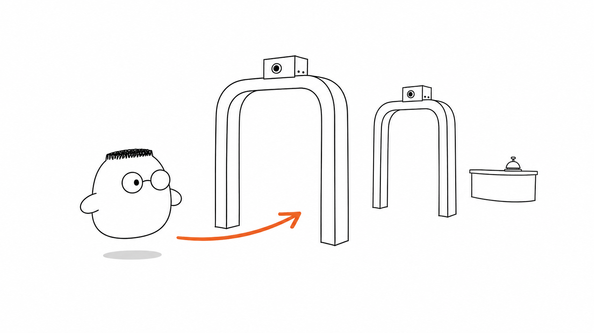
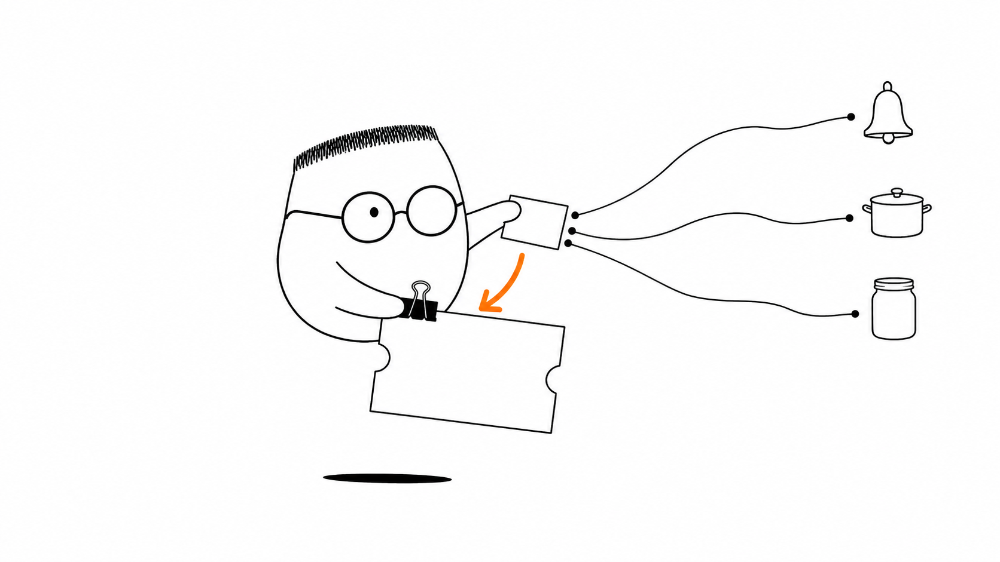

Masalah sehari-hari
Seperti bab 1, percakapan dimulai dari tamu sebagai client yang mengirim request ke server, lalu server mengirim respons kembali.
Analogi Kuka
Kuka menulis pesanan di selembar kertas. Pelayan menerima kertas itu dan membuat tiket yang rapi untuk dapur. Dapur membaca tiket, lalu gudang menyediakan bahan yang dibutuhkan.
Setelah makanan siap, pelayan membawa hasilnya ke meja Kuka. Setiap orang memegang satu jenis pekerjaan, jadi pesanan tidak hilang di antara meja.
Peta sederhananya
Tamu adalah client. Kertas pesanan adalah request. Pelayan adalah controller. Juru masak adalah service. Petugas gudang adalah repository. Pintu pemeriksaan adalah middleware. Nota yang ikut bersama pesanan adalah request context.
Ilustrasi

Restoran terlihat seperti satu tempat, tetapi pekerjaan di dalamnya terbagi. Server juga begitu. Request melewati beberapa bagian sebelum respons kembali.
Penjelasan konsep
Jika satu orang menjadi pelayan, juru masak, dan petugas gudang sekaligus, ia cepat kewalahan. Tiga lapisan membagi tanggung jawab supaya setiap bagian punya pekerjaan yang jelas.

Pelayan disebut controller. Juru masak disebut service. Petugas gudang disebut repository. Ketiga lapisan ini boleh bekerja sama, tetapi masing-masing tetap berada di wilayahnya.
Controller menerima request, membaca isinya, dan menulis tiket untuk service. Ia tidak memasak. Service menjalankan aturan pesanan, seperti menghitung total atau memastikan bahan tersedia. Repository mengambil dan menyimpan data tanpa memutuskan aturan bisnis.
Dengan batas ini, resep dapat berubah tanpa mengubah cara pelayan menerima pesanan. Gudang juga dapat berpindah dari satu sistem ke sistem lain tanpa membuat dapur ikut berubah.
Routing dan titik masuk
Alurnya dimulai dari titik masuk dan routing. Resepsionis mengarahkan tamu ke pelayan yang tepat, seperti routing pada bab sebelumnya. Setelah itu, request bergerak dari controller ke service, lalu ke repository.
Siklus lengkap end to end
Lapisan tidak menghapus perjalanan request. Request masuk dari pintu, melewati middleware, menuju controller, service, dan repository, lalu kembali sebagai respons. Saat ada masalah, kita tahu meja mana yang perlu diperiksa.
Sebelum sampai ke controller, pesanan melewati middleware. Middleware adalah barisan pintu pemeriksaan di depan restoran. Setiap pintu boleh memeriksa, mencatat, mengubah sedikit, menolak, atau meneruskan pesanan.

Middleware memanggil next() untuk berkata, "selesai, teruskan ke petugas berikutnya". Jika ia lupa memanggilnya dan tidak mengirim respons, barisan berhenti di pintu itu.
Kenapa urutan penting
Restoran memeriksa reservasi sebelum mengambil jaket tamu. Di server, middleware autentikasi sebaiknya berjalan sebelum handler memakai identitas tamu. Salah urutan dapat membuat pemeriksaan datang terlambat.
Request context
Request context adalah nota kecil yang menempel pada pesanan. Nota ini dapat membawa identitas tamu, nomor meja, batas waktu, atau nomor untuk tracing. Ia ikut dari middleware ke controller, service, dan repository.
Meneruskan data autentikasi
Data autentikasi yang diperiksa di pintu dapat dibaca dapur lewat nota itu. Dapur tidak perlu bertanya ulang kepada tamu.
Tracing dan pembatalan
Nomor tracing membantu tim menemukan satu pesanan ketika ada keluhan. Context juga dapat membawa tanda pembatalan dan batas waktu. Jika Kuka membatalkan pesanan, dapur dapat berhenti memasak.

Server tidak perlu terus mengerjakan request yang sudah tidak diperlukan.
Diagram alur
Request melewati dua middleware, lalu controller membuat tiket. Service memproses aturan dan repository membaca gudang. Hasilnya kembali sebagai respons.
Contoh mini
Pesanan tamu: meja 4, sup hangat Controller: pesanan berubah jadi tiket Service: tiket diproses dapur Repository: catatan gudang, bahan tersedia Dapur: sup selesai dimasak Respons: pesanan siap diantar
Seperti kartu pos, pesanan Kuka berubah menjadi tiket yang dapat dibaca setiap bagian. Catatan gudang membantu dapur, lalu restoran mengirim respons kepada tamu.
Ringkasan
- Server membagi pekerjaan request ke beberapa bagian dengan tanggung jawab yang jelas.
- Controller menerima request dan mengubahnya menjadi tiket untuk lapisan berikutnya.
- Service menjalankan aturan bisnis dan tidak menyerahkan keputusan itu kepada controller.
- Repository menjadi satu-satunya pintu untuk membaca atau menyimpan data di gudang.
- Middleware memeriksa atau meneruskan request sebelum controller bekerja.
next()meneruskan request, sedangkan lupa memanggilnya dapat menghentikan barisan.- Request context membawa identitas, batas waktu, nomor tracing, dan tanda pembatalan bersama request.
Pertanyaan pemahaman
- Apa tugas controller, dan apa yang tidak boleh ia kerjakan?
- Kenapa gudang atau database hanya boleh diakses lewat repository?
- Apa fungsi
next()dan apa yang terjadi jika satu middleware lupa memanggilnya?
Mau lebih dalam
Versi teknis membongkar implementasi setiap lapisan dan perjalanan request dengan kode yang bisa dijalankan.
Disinggung sekilas
- Titik masuk dan routing
- Siklus hidup end to end
- Logging, autentikasi, parsing, compression, dan error handler
- Tracing, deadline, dan pembatalan request
Belum dibahas di sini
Implementasi kode penuh Go/Python ada di versi teknis.